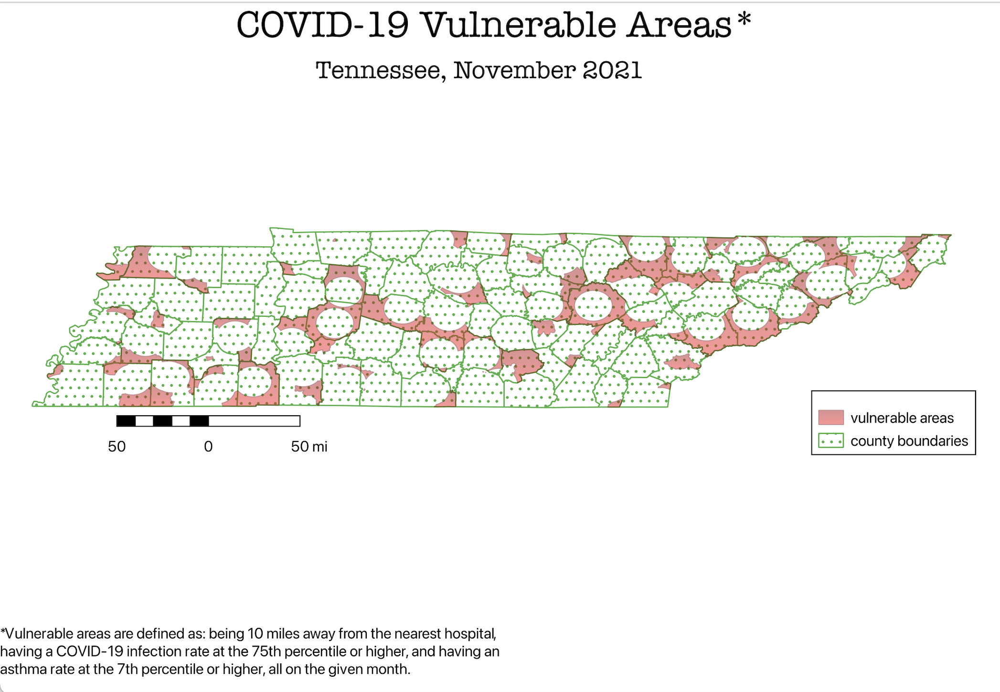

homework 8

Because Tennessee has many rural areas, I wanted to visualize what parts of the state were especially vulnerable to COVID-19 at the height of the pandemic. Because COVID-19 is a disease that affects the lungs, having asthma puts individuals at high risk for complications. Another factor that increases risk is inability to receive treatment, so distance from hospitals was another variable to consider. Finally, because COVID-19 is a very infectious disease, living in an area with high COVID rates also puts you at risk for contracting COVID and the complications that come with it.
Thus, I wanted to identify the regions of Tennessee that were (1) more than ten miles away from the nearest hospital, (2) had high rates of asthma, and (3) had high covid rates.
On arcgis, I found a shapefile with all of the hospitals in Tennessee. This allowed me to use my first geoprocessing tool, a 10 mile buffer around each hospital. Next, I found COVID-19 case surveillance data from the CDC. I had to use R and an API key to get the specific data from Tennessee, but I know had a csv with covid cases per county in November of 2021. I divided the number of cases by the county population and joined the data with a map of Tennessee’s counties I got from TIGER. I created a choropleth map and created a layer with only the counties with the top 25% infection rates. Then, I used the geoprocessing tool Difference, to create a layer with areas outside the hospital buffer and also with high infection rates. I repeated the same process with asthma surveillance data from the CDC, and used intersect to determine the areas that were more than 10 miles away from the nearest hospital, were in the top 25% of covid rates, and top 25% of asthma rates.
Data used for this project
covid data csv
asthma data
link to asthma data
link to covid data
Link to hospital data
return home